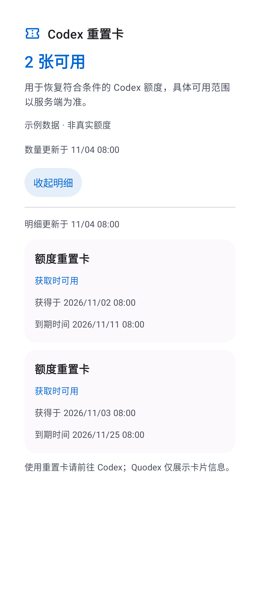

额度，直接看。
查看 Codex 已用或剩余百分比与重置时间；alpha34 源码新增重置卡可用张数与明细。没有返回的数据明确说明，未知值不会被补成零。
QUOTA / RESET TIMEYOUR USAGE. IN PLAIN SIGHT.
集中查看 AI 服务额度与订阅，
把 Codex 用量放到 Android 桌面。
少一次切换，多一点专注。
当前下载：alpha33 预发布 · 更新说明
周期与数值按服务端实际返回展示。
同一份数据，两种看法。切换不发起请求。
订阅仅前台查询，各服务分别刷新与断开。
交互示意 · 仅本地示例数据，不连接任何账号
01 / LESS SWITCHING
把分散的数字放在一起。看剩余，也看重置；看趋势，也看每天。你关心的信息，不必再藏在一次次页面切换后面。
查看 Codex 已用或剩余百分比与重置时间；alpha34 源码新增重置卡可用张数与明细。没有返回的数据明确说明，未知值不会被补成零。
QUOTA / RESET TIME标准额度、2×1 紧凑额度、2×2 热力图，以及带百分比的桌面图标。点击刷新，抬眼可见。
WIDGETS / AT A GLANCE近 7／30 天条形图与热力图自由切换。刷新失败保留上次数据与时间，缺失日期与零值分别展示。
TRENDS / HONEST DATACODEX / RESET CARDS
alpha34 源码新增：在额度页查看可用张数，展开明细看卡片名称、状态、获得时间与到期时间。界面支持中文、English 和日本語。
点“查看明细”按需查询，五分钟缓存，也能单独刷新。明细查询失败时保留上次数据，不影响额度；服务端可能只返回部分卡片，未知数量不会被补成零。
仅展示，使用卡片请前往 Codex。日期按手机时区显示，实际可用性以服务端为准；不新增后台明细请求。真实账号覆盖仍待验证，发布状态以 Releases 实际 APK 为准。

02 / CONNECTIONS
Codex 之外，DeepSeek、OpenCode 与 Cursor 各自保存连接。无需先登录 Codex，服务之间互不覆盖。
| 服务 / PROVIDER | 查看内容 | 使用范围 |
|---|---|---|
| 01Codex | 额度、重置时间、Token 趋势；重置卡明细（alpha34 源码） | App / 桌面 / 后台额度刷新 |
| 02DeepSeek | API 余额，按币种分别展示 | 订阅页前台查询 |
| 03OpenCode Go | 周期用量与重置时间 | 前台查询 / 存在接口迁移风险 |
| 04OpenCode Console | 工作区余额与可用额度 | 前台查询 / 实验性接入 |
| 05Cursor | 个人模型用量与计费周期 | 前台查询 / 实验性接入 |
新服务的真实账号覆盖仍待验收；它们暂不进入 Codex 图表、桌面组件或后台同步。兼容接口可能变化，重要数据请在官方控制台核对。
接入指南与兼容范围03 / ON YOUR ANDROID
原生 Android 页面、浅色与深色模式，支持中文、English 和日本語。跟随系统，也尊重你的显示偏好。


历史 Android 模拟器原生截图 · 订阅 alpha32，图表与组件 alpha31 · 均为示例数据。历史截图可能使用旧版 Q。
04 / ALPHA33 UPDATES
alpha33 优先读取公开更新索引，正常检查不占用 GitHub REST API 共享 IP 配额。主来源连接失败时才尝试备用 API，两者分别遵守等待时间。服务端要求等待时，显示具体重试时间，到期后恢复检查按钮。网络与 CDN 缓存仍可能延迟检查。
如果 alpha31／alpha32 的检查仍被等待状态阻塞，请从 Releases 下载已发布的 alpha33 或更高版本，使用相同签名覆盖安装，无需卸载。安装由 Android 确认。

05 / GET STARTED
从 GitHub Releases 下载 APK，支持 Android 10+。同页提供 SHA-256 校验和与来源信息。
获取安装包先体验示例模式，再连接 Codex。其他服务在订阅页单独接入，凭据在本机加密保存。
阅读接入指南添加 Codex 额度或热力图组件。小米、Redmi、POCO 用户可先检查桌面快捷方式权限。
桌面添加帮助当前为 Alpha 预发布，尚未上架 Google Play。已有用户可在设置中检查、下载并安装更新；安装始终由 Android 系统弹窗确认。
06 / BEFORE YOU ASK
Quodex 是 MIT 开源的独立第三方工具，与 OpenAI、DeepSeek、OpenCode 或 Cursor 无隶属关系。服务名称仅用于说明连接范围。
Codex 额度支持手动与后台周期刷新；新增订阅服务仅在前台查询，五分钟内使用缓存。后台受 Android 调度、网络与省电策略限制，Token 统计也可能存在服务端延迟，不保证实时更新。
凭据在设备上加密保存，请求直接连接相应服务。Quodex 没有自建数据中转或自动诊断上传；Codex 退出与其他订阅的断开分别处理，本机清理不等于远端撤销授权。阅读隐私说明。
当前隐私说明已包含 alpha34 源码的按需重置卡明细查询。 查看 alpha33 随包隐私说明。alpha31／alpha32 的更新检查仅访问 api.github.com，旧版以随包说明为准。查看 alpha32 历史隐私说明。
只展示接口实际返回的内容。不同账号、套餐或工作区可能返回不同字段；未知数据不补成零，不从额度百分比推算 Token 或费用。查看支持范围。
先检查网络、省电和 Launcher 权限；强制停止应用期间不承诺更新。升级后桌面可能保留旧尺寸，长按调整或重新添加即可。查看后台指引。
约 12 秒，无声，手动播放。保留 alpha22 发布前的页面淡入、额度填充与柱图动效，其外观不代表当前界面。历史说明与来源。